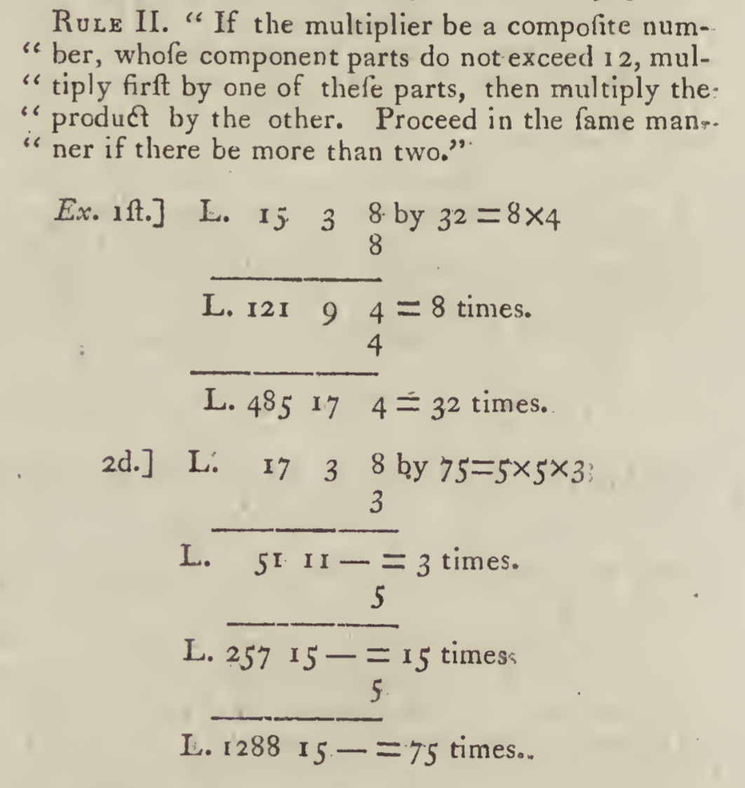

Introducing debkeepr
An R package for the analysis of non-decimal currencies
After an extensive period of iteration and a long but rewarding process of learning about package development, I am pleased to announce the release of my first R package. The package is called debkeepr, and it derives directly from my historical research on early modern merchants. debkeepr provides an interface for working with non-decimal currencies that use the tripartite system of pounds, shillings, and pence that was used throughout Europe in the medieval and early modern periods. The package includes functions to apply arithmetic and financial operations to single or multiple values and to analyze account books that use double-entry bookkeeping with the latter providing the basis for the name of debkeepr. In a later post I plan to write about the package development process, but here I want to discuss the motivation behind the creation of the package and provide some examples for how debkeepr can help those who encounter non-decimal currencies in their research.
You can install debkeepr from GitHub right now with devtools, and I am planning to submit the package to CRAN soon. Feedback is always welcome and any bug reports or feature requests can be made on GitHub.
# install.packages("devtools")
devtools::install_github("jessesadler/debkeepr")Pounds, shillings, and pence: lsd monetary systems
The system of expressing monetary values in the form of pounds, shillings, and pence dates back to the Carolingian Empire and the change from the use of gold coins that derived from the late Roman Empire to silver pennies that had taken place by the eighth century. Needing ways to count larger quantities of the new silver denarius, people began to define a solidus, originally a gold coin introduced by the Emperor Constantine, as a unit of account equivalent to 12 denarii. For even larger valuations, the denarius was further defined in relation to a pound or libra of silver. Though the actual number of coins struck from a pound of silver differed over time, the rate of 240 coins lasted long enough to create the custom of counting coins in dozens (solidi) and scores of dozens (librae). The librae, solidi, and denarii (lsd) monetary system was translated into various European languages, and though the ratios between the three units often differed by region and period, the basic structure of the system remained in place until decimalization began following the French Revolution.1
The pounds, shillings, and pence system complicates even relatively simple arithmetic operations. Especially in our decimalized world, manipulating values that are made up of three different units in which two of the units are non-decimal quickly becomes cumbersome. The principles of grade school arithmetic come running back, as the practice of addition and carrying over values to the next unit gains new relevancy. Calculations with pounds, shillings, and pence values are further complicated when dealing with more than one currency or money of account, particularly if one or more of the currencies used bases for the shillings and pence units that differed from the common bases of 20 shillings to a pound and 12 pence to a shilling.
The economic historian encounters the difficulties of handling non-decimal currencies in two main contexts. In reading through documents that may or may not be primarily economic in nature, the researcher comes across sets of values that need to be manipulated to better understand their meaning. A common case is the discovery of values that need to be added together to see if they are equivalent to a value in another document, or there may be values in one currency that have to be converted to another currency for comparison. The second context in which historians confront non-decimal monetary values is in explicitly economic documents such as entire account books that may contain hundreds or thousands of transactions. In both contexts the researcher is often stuck performing arithmetic calculations by hand just as merchants and bookkeepers had to do in the past. I do not know how many pages of scratched out calculations I went through in my own research on the estate of Jan della Faille de Oude, a wealthy merchant from Antwerp who died in 1582.

The tripartite and non-decimal nature of pounds, shillings, and pence values presents particular difficulties for the analysis of large sets of accounts. A first instinct of the researcher is to place the transactions from an account book into a table or data base to better understand these large groups of data, but how should the pounds, shillings, and pence values be entered? Should they be placed into three separate variables or brought together somehow into one, and how should the arithmetic be performed? So long as there is no clear way to handle one, not to mention multiple, non-decimal currency within a data base, the use of digital tools to investigate and analyze historical accounts books will be hindered.
debkeepr
debkeepr seeks to overcome these issues and integrate non-decimal pounds, shillings, and pence values into the decimalized environment of R, opening the vast analytical and visual capabilities of R to historical monies of account. debkeepr accomplishes this through the creation of the lsd class and functions intended to work with this new class of object in R. The lsd class unifies the separate pounds, shillings, and pence units into a numeric vector of length three and tracks the non-decimal bases for the shillings and pence units through a bases attribute. lsd objects are stored as lists, making it possible for a single object to contain multiple pounds, shillings, and pence values and to implement lsd objects as list columns in a data frame or tibble. The lsd class is intended to both minimize the difficulty historians encounter in one-off calculations and provide a consistent means for the exploration and analysis of large sets of accounts.2
I have set up a pkgdown site for debkeepr, and you can find the source code on GitHub. The package includes three vignettes, two of which deal with data from the practice journal and ledger from Richard Dafforne’s The Merchant’s Mirrour, Or Directions for the Perfect Ordering and Keeping of His Accounts (London, 1660), a bookkeeping manual that was printed throughout the seventeenth century. Data frames for the transactions and accounts from this set of account books are also included with the package.
Vignettes
- Getting Started with debkeepr vignette: An in depth overview of
debkeepr’s functions and their use in various contexts. - Transactions in Richard Dafforne’s Journal vignette: Examples of financial and arithmetic calculations dealing with various currencies taken from the example journal in Richard Dafforne’s Merchant’s Mirrour (1660).
- Analysis of Richard Dafforne’s Journal and Ledger vignette: An analysis of the example journal and ledger in Dafforne’s Merchant’s Mirrour using the
dafforne_transactionsanddafforne_accountsdata provided indebkeepr.
In the rest of this post I want to quickly highlight how debkeepr can assist historians in handling pounds, shillings, and and pence values in both one-off calculations and in the context of an entire account book. The vignettes go into much greater detail than will be done here.
Arithmetic with debkeepr
At the heart of debkeepr is the ability to normalize pounds, shillings, and pence values to specified non-decimal unit bases in the process or making various calculations. Even in the simplest case of addition, debkeepr makes the process easier and less error prone. Let’s use an example from the image below that shows arithmetic on a scratch piece of paper dealing with trade between Holland and the Barbary coast in the 1590s.3 On the top right four values in the money of account of pounds Flemish are added together.

| pounds | shillings | pence |
|---|---|---|
| 74 | 10 | 0 |
| 26 | 8 | 8 |
| 107 | 14 | 0 |
| 28 | 19 | 0 |
debkeepr provides multiple means to add together values of pounds Flemish, which used the standard bases of 20 shillings per pound and 12 pence per shilling.4
- Add the separate units by hand and then normalize.
- Do the addition with
debkeeprby supplying numeric vectors of length three. - Create an object of class
lsdand proceed with the addition.
library(debkeepr)
# Normalize £235 51s. 8d.
deb_normalize(c(235, 51, 8), bases = c(20, 12))
#> l s d
#> [1] 237 11 8
# Addition of values with debkeepr
deb_sum(c(74, 10, 0),
c(26, 8, 8),
c(107, 14, 0),
c(28, 19, 0))
#> l s d
#> [1] 237 11 8
# Create lsd object from list of vectors, then do addition
lsd_values <- deb_as_lsd(list(c(74, 10, 0),
c(26, 8, 8),
c(107, 14, 0),
c(28, 19, 0)),
bases = c(20, 12))
deb_sum(lsd_values)
#> l s d
#> [1] 237 11 8Multiplication and division of pounds, shillings, and pence values were equally frequent calculations, but they are more complex to do by hand. Bookkeeping and merchant manuals often included rules for the multiplication and division of compound values such as pounds, shillings, and pence. The article on arithmetic in the third edition of the Encyclopedia Britannica, printed in 1797, provides a good example of how to do compound unit arithmetic. debkeepr greatly simplifies this process.
# Multiply £15 3s. 8d. sterling by 32
deb_multiply(c(15, 3, 8), x = 32)
#> l s d
#> [1] 485 17 4
# Multiply £17 3s. 8d. sterling by 75
deb_multiply(c(17, 3, 8), x = 75)
#> l s d
#> [1] 1288 15 0
The examples for division in the Encyclopedia Britannica include the division of pounds, shillings, and pence, as well as the division of weight measured in terms of hundredweight, quarters, and pounds. A hundredweight consisted of four quarters and there were 28 pounds (or two stones) in a quarter. While debkeepr was created with pounds, shillings, and pence values in mind, the measurement of weight in terms of hundredweight can be integrated by altering the bases argument. This example even serves to show a mistake in the printing in the Encyclopedia, as the answer is shown as 15 cwt. 2 q. 21 lb., but it should actually be 22 lb. Checking the long division at the bottom of the calculation, 22 goes into 44 twice not once. Notice too that the division of £465 12s. 8d. ends with a remainder of 8 even though this is not included in the answer provided. This remainder leads to the decimal in the pence unit in the answer provided by deb_divide(). Setting the round argument to 0 would convert the pence unit to a whole number.
# Divide £465 12s. 8d. sterling by 72
deb_divide(c(465, 12, 8), x = 72)
#> l s d
#> [1] 6 9 4.11111
# Divide 345 hundredweight 1 quarter 8 lbs by 22
deb_divide(c(345, 1, 8), x = 22, bases = c(4, 28))
#> l s d
#> [1] 15 2 22These examples replicate answers already provided, but they serve to demonstrate the gains in both speed and accuracy for these common calculations. Further examples, including the use of debkeepr to convert between currencies that may or may not have different bases for the shillings and pence units, can be found in both Getting Started with debkeepr and the Transactions in Richard Dafforne’s Journal vignette.
Analysis of account books
As a way of providing example data of pounds, shillings, and pence values in a data frame, debkeepr includes data from the example journal and ledger in Dafforne’s Merchant’s Mirrour from 1660. dafforne_transactions has 177 transactions between 46 accounts from the journal. Each transaction has a creditor and debtor account, showing where each transactional value came from and where it went to, the date of the transaction, and the value in pounds sterling contained in an lsd list column. Extra details include the pages on which the transaction can be found in Dafforne’s journal and ledger and a short description of the transaction. A PDF copy of the journal is available for download if you want to see what the original source looks like. The raw data from which dafforne_transactions derives also demonstrates the process of entering pounds, shillings, and pence units into three separate columns to create the data base and then using deb_lsd_gather() to transform these variables into an lsd list column.
# Transactions from the Dafforne's example journal
dafforne_transactions
#> # A tibble: 177 x 8
#> id credit debit date lsd journal ledger description
#> <dbl> <int> <int> <date> <S3: > <int> <chr> <chr>
#> 1 1 2 1 1633-01-01 1000,… 1 1/1 Various coins of g…
#> 2 2 2 3 1633-01-01 477, … 1 1/1 60 Leeds dozens at…
#> 3 3 2 4 1633-01-01 55, 0… 1 2/1 5 barrels that rem…
#> 4 4 2 5 1633-01-01 240, … 1 2/1 For 800 French cro…
#> 5 5 2 6 1633-01-01 229, … 1 2/1 2290 guilders rema…
#> 6 6 2 8 1633-01-01 3, 17… 1 3/1 Expenses for the r…
#> 7 7 7 2 1633-01-01 150, … 1 1/2 Ready money from J…
#> 8 8 9 11 1633-01-04 360, … 1 4/3 100 Leeds dozens s…
#> 9 9 1 9 1633-01-04 144, … 2 3/1 For 2/5 of the 100…
#> 10 10 5 10 1633-01-04 120, … 2 3/2 400 French crowns …
#> # ... with 167 more rowsThe Analysis of Richard Dafforne’s Journal and Ledger vignette provides a fuller breakdown of the data, but here I would like to show how to get a summary of the 46 accounts in the books and create a plot using ggplot2. One side effect of the use of a list column to represent pounds, shillings, and pence values is that it cannot be used for the purposes of plotting. However, this issue is overcome by the robust support for decimalization in debkeepr. Pounds, shillings, and pence values can be decimalized to any of the three units and returned to their original form when desired. For the purposes of plotting, the most useful workflow is to transform the lsd list column to decimalized pounds.
debkeepr has a set of functions meant to deal with data frames that mimic the form of a journal used for double-entry bookkeeping such as dafforne_transactions. The 177 transactions and 46 accounts in dafforne_transactions are more than enough to lose track of which accounts were most significant to the bookkeeper’s trade. Here, I will use deb_account_summary() to calculate the total credit or amount each account sent, total debit or amount each account received, and the current value of the account at the closing of the books. While deb_account_summary() gives a nice overview of the entire set of account books, it is also possible to focus on a single account with deb_account().
# Summary of all accounts in Dafforne's example journal
deb_account_summary(df = dafforne_transactions)
#> # A tibble: 46 x 4
#> account_id credit debit current
#> <int> <S3: lsd> <S3: lsd> <S3: lsd>
#> 1 1 1956, 10, 11 2903, 13, 0 -947, -2, -1
#> 2 2 2006, 3, 9 150, 0, 0 1856, 3, 9
#> 3 3 570, 0, 0 570, 0, 0 0, 0, 0
#> 4 4 75, 0, 8 75, 0, 8 0, 0, 0
#> 5 5 813, 3, 0 813, 3, 0 0, 0, 0
#> 6 6 568, 1, 11 869, 2, 7 -301, 0, -8
#> 7 7 2958, 18, 10 2958, 18, 10 0, 0, 0
#> 8 8 1580, 10, 0 1580, 10, 0 0, 0, 0
#> 9 9 1744, 1, 4 1744, 1, 4 0, 0, 0
#> 10 10 606, 2, 6 606, 2, 6 0, 0, 0
#> # ... with 36 more rows
# Summary of the cash account in Dafforne's example journal
deb_account(df = dafforne_transactions, account_id = 1)
#> # A tibble: 3 x 2
#> relation lsd
#> <chr> <S3: lsd>
#> 1 credit 1956, 10, 11
#> 2 debit 2903, 13, 0
#> 3 current -947, -2, -1To plot the summary of the accounts in the journal and ledger the lsd list columns have to be converted to decimalized pounds, which is done with deb_lsd_l() and dplyr::mutate_if(). From this information, we can create a line range plot in which the upper limit is represented by the total credit, the lower limit by the total debit, and the current value by a point. Blue points show accounts that have been balanced by the end of the books and are therefore closed, while black points represent the values for accounts that remain open.
library(dplyr)
library(ggplot2)
# Prepare account summary for plotting
(dafforne_summary <- dafforne_transactions %>%
deb_account_summary() %>%
mutate_if(deb_is_lsd, deb_lsd_l) %>%
mutate(debit = -debit))
#> # A tibble: 46 x 4
#> account_id credit debit current
#> <int> <dbl> <dbl> <dbl>
#> 1 1 1957. -2904. -947.
#> 2 2 2006. -150 1856.
#> 3 3 570 -570 0
#> 4 4 75.0 -75.0 0
#> 5 5 813. -813. 0
#> 6 6 568. -869. -301.
#> 7 7 2959. -2959. 0
#> 8 8 1580. -1580. 0
#> 9 9 1744. -1744. 0
#> 10 10 606. -606. 0
#> # ... with 36 more rows
# Plot summary of accounts
ggplot(data = dafforne_summary) +
geom_linerange(aes(x = account_id, ymin = debit, ymax = credit)) +
geom_point(aes(x = account_id, y = current,
color = if_else(current == 0, "Closed", "Open"))) +
scale_color_manual(values = c(Open = "black", Closed = "blue")) +
scale_y_continuous(labels = scales::dollar_format(prefix = "£")) +
labs(x = "Accounts",
y = "Pounds sterling",
color = "Status",
title = "Summary of the accounts in Dafforne's ledger") +
theme_light()debkeepr and reproducibility
The above plot only scratches the surface of the possibilities for exploring and analyzing account books that use pounds, shillings, and pence values with debkeepr. Yet, what I think is the most significant about debkeepr is not any one plot, time saving feature, or type of analysis, but rather the possibility of using the practices of reproducible research in the context of historical economic data that takes the form of pounds, shillings, and pence values. Individual calculations are easier to track and validate when written in code rather than scrawled out on a scratch piece of paper or entered into a calculator. Even more importantly, debkeepr provides a workflow for entering data from account books into a data base, tidying the data by transforming separate pounds, shillings, and pence variables into an lsd list column, and then exploring, analyzing, and visualizing the data in ways that integrate with the tidyverse and more general practices of data analysis in R. It is my hope that debkeepr can help bring to light crucial and interesting social interactions that are buried in economic manuscripts, making these stories accessible to a wider audience.
Footnotes
For more information about the development of the system of pounds, shillings, and pence and medieval monetary systems more generally see Peter Spufford, Money and its Use in Medieval Europe (Cambridge: Cambridge University Press, 1988).↩︎
For a more in depth discussion of
lsdobjects and a step-by-step overview of how to create and work with them see Getting Started with debkeepr.↩︎This scratch piece of paper comes from the archive of Daniël van der Meulen en Hester de la Faille, zijn vrouw, 1550-1648 at Erfgoed Leiden en Omstreken. You can access the original here.↩︎
This means that the default value of
c(20, 12)does not need to be altered for thebasesargument, though it is included in some of the below examples for transparency.↩︎